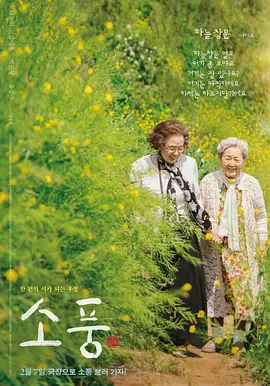

8.2
郊游
Picnic
2023
韩国
评分 8.2
导演:
金容钧
演员:
罗文姬 / 金英玉 / 朴根滢
类型:
剧情
剧情简介
六十年后，南海的海风依旧带着潮湿的甜味，两位年迈的奶奶再次踏上这片熟悉的土地。火车缓缓驶入小镇的清晨时分，她们提着旧式旅行包，边走边轻声争论着儿时的糗事，仿佛时间在她们身上失去了锋芒。故乡的街巷虽已不同，但某些细碎的声音——远处的浪声、山坡上飘起的鸟鸣——却像是把她们直接拽回到还扎着麻花辫的年代。守在南海的爷爷依旧习惯清早在院前打扫，听闻旧友归来，他有些局促，却难掩眼底的欣喜。他陪着两位奶奶走向旧日常去的海边，路过的每一处，都牵引着三人不同的回忆：有的是少年心气，有的是未能说出口的歉意，也有随着岁月沉淀的遗憾与淡然。镜头在他们的步伐间静静移动，不急不缓，让他们用笑声、争吵、沉默与叹息重新梳理一段段已经被时间冲淡的羁绊。海风吹过的午后，他们在沙滩铺开简单的野餐，像几十年前那样互相递着食物。奶奶们谈论着逝去的人、离开的岁月、与现实生活的距离；爷爷则默默听着，在风中偶尔低声补上一句。那一刻，三人都明白，有些关系无需再解释，它们在漫长的人生里自会找到新的形状。影片以温柔的方式记录老友重逢的旅程，让观众看到，不论走了多远，记忆永远能指引人回到心之所向的地方。